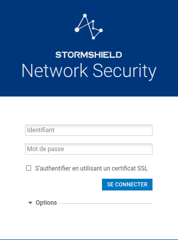

Configuration d'un firewall
Réinitialisation d'un firewall Stormshield
1. Mise sous tension
Commencez par brancher l'alimentation électrique du firewall Stormshield.
2. Réinitialisation du firewall
À l'aide d'un objet fin et rigide, comme un trombone, appuyez sur le bouton de réinitialisation du firewall.
Attendez que les trois voyants soient de nouveau allumés avant de poursuivre.
3. Connexion au firewall
Connectez votre ordinateur au firewall à l'aide d'un câble RJ45.
Branchez le câble sur l'interface LAN, correspondant au port n°2 du firewall.
4. Accès à l'interface d'installation
Ouvrez un navigateur Internet et saisissez l'adresse suivante :
https://10.0.0.254/install
Suivez les différentes étapes affichées à l'écran afin de terminer l'installation du firewall.
5. Connexion à l'interface d'administration
Une fois l'installation terminée, accédez à l'interface d'administration à l'adresse suivante :
https://10.0.0.254/admin

Utilisez les identifiants suivants pour vous connecter :
- Utilisateur :
admin - Mot de passe :
admin
Mise à jour du firmware d'un firewall Stormshield
1. Modifier temporairement la date du système
Depuis l'interface d'administration du Stormshield, accédez aux paramètres de date et d'heure du système.
Modifiez temporairement la date afin de définir une date située en 2025.
Pourquoi utiliser une date en 2025 ? Cette modification permet de replacer temporairement le système dans une période compatible avec les droits de maintenance associés au boîtier.
2. Redémarrer le firewall
Après avoir modifié la date, effectuez un redémarrage complet du firewall.
Ce redémarrage permet aux différents services du Stormshield de prendre correctement en compte la nouvelle date système.
Une fois le redémarrage terminé :
- reconnectez-vous à l'interface d'administration ;
- vérifiez que la date configurée correspond bien à celle définie précédemment ;
- assurez-vous que le firewall fonctionne normalement.
3. Installer la mise à jour du firmware
Vous pouvez maintenant procéder à l'installation du firmware prévu pour le modèle de boîtier concerné.
Vérifications préalables
Avant de lancer la mise à jour, vérifiez impérativement les éléments suivants :
- Modèle du boîtier ;
- Version actuelle de SNS ;
- Compatibilité de la version cible avec le boîtier ;
- Sauvegarde récente de la configuration.
Une fois ces vérifications effectuées, lancez la procédure de mise à jour.
⚠️ Attention : La mise à jour peut entraîner plusieurs redémarrages du firewall. Ne débranchez pas et ne coupez pas l'alimentation du boîtier pendant l'opération.
Attendez la fin complète de la mise à jour avant d'effectuer toute autre manipulation.
4. Rétablir la date et l'heure actuelles
Une fois la mise à jour terminée et le firewall redémarré :
- reconnectez-vous à l'interface d'administration ;
- accédez aux paramètres de date et heure ;
- rétablissez la date et l'heure actuelles ;
- vérifiez la configuration de la synchronisation NTP, si celle-ci est utilisée ;
- contrôlez que la date et l'heure affichées par le système sont correctes.
Important : N'oubliez pas de rétablir la date réelle après la mise à jour afin d'éviter tout problème lié aux certificats, aux journaux système ou aux différents services du firewall.
5. Vérifications finales
Après la mise à jour, effectuez quelques contrôles afin de vous assurer que le firewall fonctionne correctement :
- Vérifier la version du firmware/SNS installée ;
- Vérifier la date et l'heure du système ;
- Vérifier l'état des interfaces réseau ;
- Vérifier la connectivité réseau ;
- Vérifier que les principales règles de filtrage sont toujours présentes ;
- Vérifier que la configuration sauvegardée est correctement appliquée.
La mise à jour est terminée lorsque l'ensemble de ces vérifications est conforme.